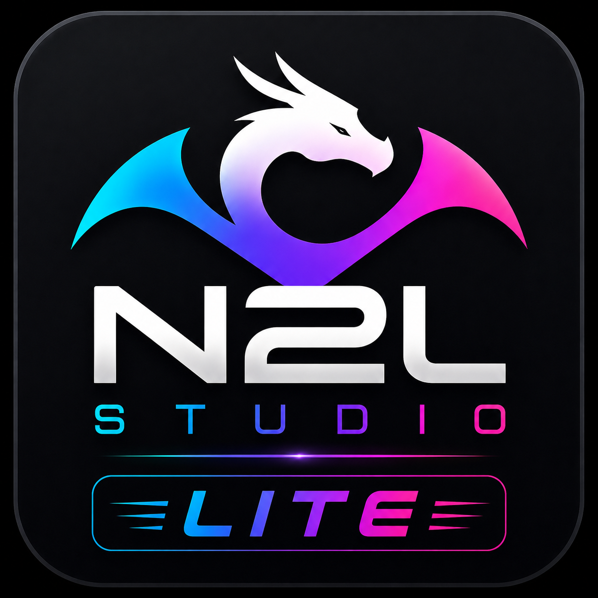
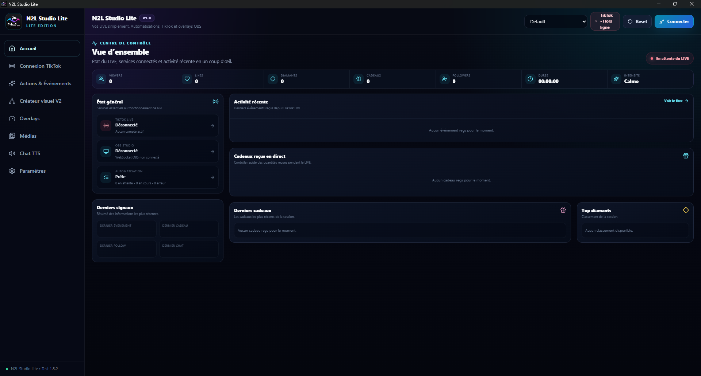
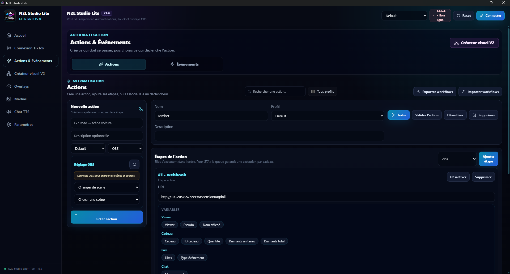
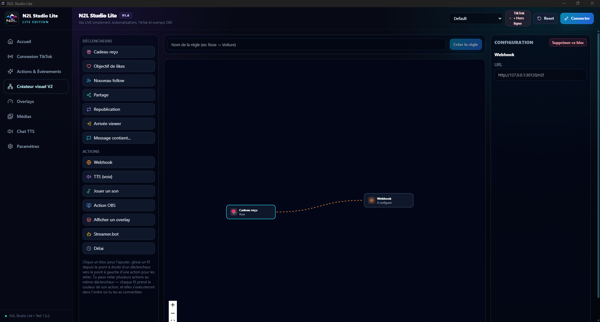
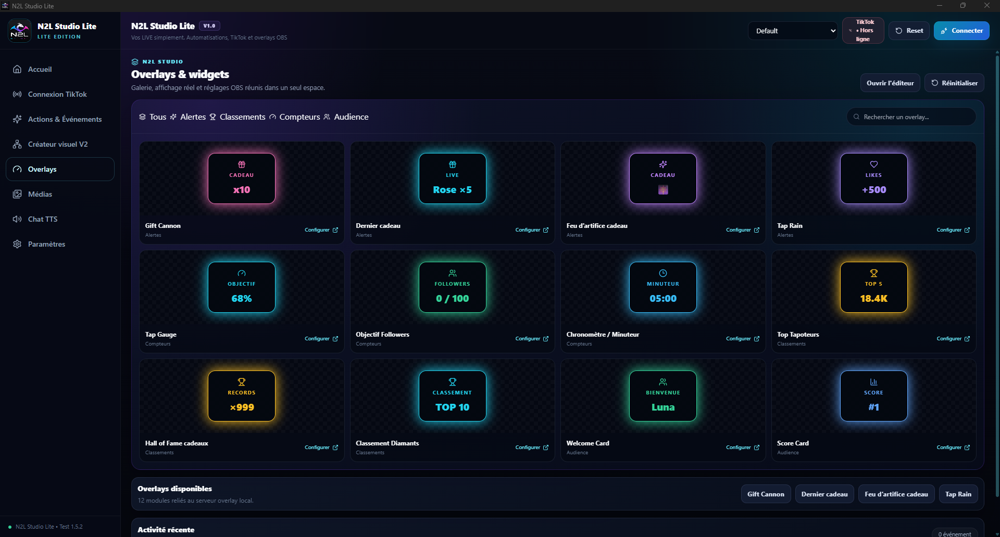
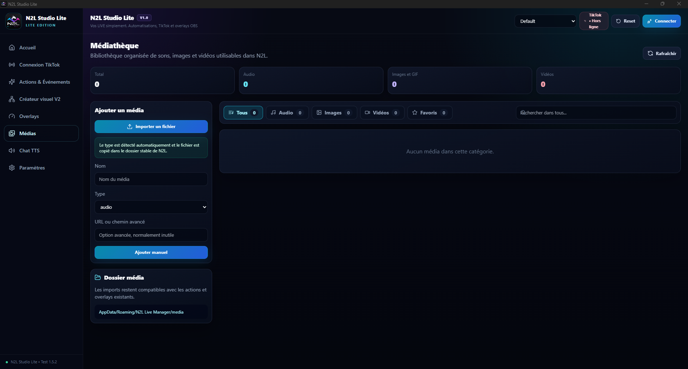

Actions & événements
Déclenchez des actions à partir des cadeaux, likes, follows, partages, republications, arrivées de viewers ou messages du chat.

Automatisez votre LIVE. Créez vos interactions. Personnalisez votre stream.
Une application Windows développée en autodidacte pour connecter TikTok LIVE à vos automatisations, médias, overlays et outils de streaming. Le projet est encore en bêta et continue d'évoluer.
Lite rassemble les outils essentiels dans une seule interface, avec une approche visuelle pour construire des interactions sans multiplier les logiciels.
Déclenchez des actions à partir des cadeaux, likes, follows, partages, republications, arrivées de viewers ou messages du chat.
Construisez des règles sous forme de blocs et reliez déclencheurs et actions dans un workflow visuel.
Ajoutez alertes, compteurs, objectifs, classements, chronomètres et cartes d'audience à votre scène.
Centralisez sons, images, GIF et vidéos, puis utilisez-les dans vos actions, overlays et interactions vocales.
Ces captures proviennent directement de l'application. L'interface présentée correspond aux pages prévues pour la version Lite.





Après avoir téléchargé et installé N2L Studio Lite, contactez-moi pour obtenir gratuitement votre clé d'activation. Aucune information bancaire ni aucun abonnement ne sont nécessaires.
Pour une question, un bug, une suggestion ou un retour sur N2L Studio Lite, vous pouvez me contacter directement par e-mail.